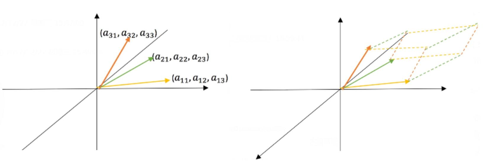
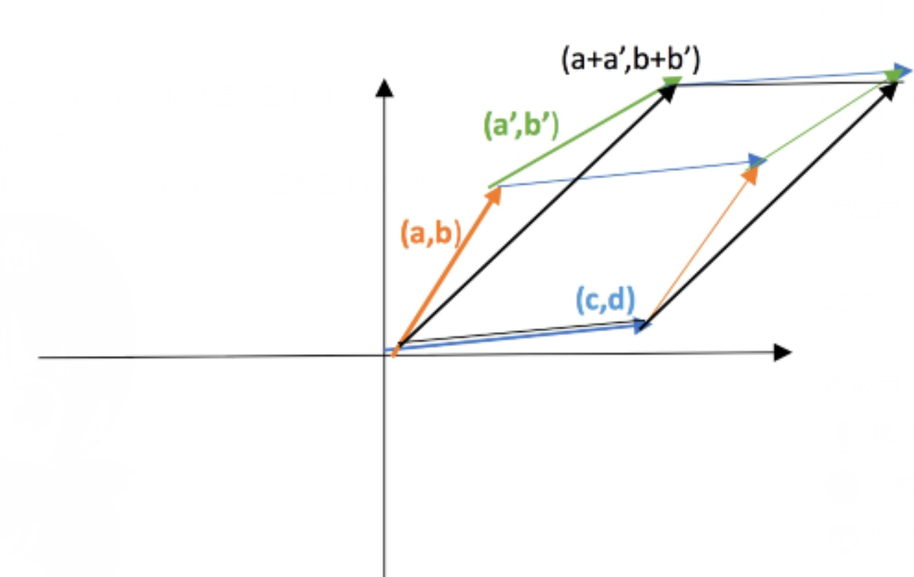

线性代数笔记(二十)——行列式应用
这一节从行列式的性质出发，对行列式三个方面的应用进行描述：求逆矩阵、克莱姆法则和体积。
行列式应用
求逆矩阵
我们已经学过了用高斯-若尔当求逆矩阵的方法，尽管从实用角度出发高斯若尔当求逆法相当好用，但毕竟不够直观。而借助行列式，我们可以给出一个更直观的求逆矩阵的代数表达式：
\[ A^{-1}=\frac{1}{|A|}C^T \]
这里的\(C\)被称作代数余子式矩阵，矩阵的每个元素是由\(A\)中对应位置元素的代数余子式组成，其转置矩阵一般也称其为伴随矩阵，记为\(C^T\)。
这一代数表达式的证明也很简单，两边同时左乘\(A\)，则问题转化为证明：\(AC^T=|A|I\)，展开观察： \[ AC^T=\begin{bmatrix}a_{11}&...&a_{1n} \\...&...&...\\ a_{n1}&...&a_{nn}\end{bmatrix}\begin{bmatrix} C_{11}&...&C_{n1}\\ ...&...&...\\ C_{1n}&...&C_{nn}\end{bmatrix} \]
根据乘法运算，可以发现\(A\)中每一个行向量与\(C^T\)中对应列向量做内积后得到的正是\(\det(A)\)（使用上一节的代数余子式计算行列式公式得到）。举个例子，第1行与第1列内积得到\(\det(A)\)，第2行与第2列内积也得到\(\det(A)\)，以此类推。因此，乘法运算得到的最终矩阵中主对角线上的元素都是\(\det(A)\)：
\[ \begin{bmatrix} a_{11}&...&a_{1n} \\...&...&...\\ a_{n1}&...&a_{nn}\end{bmatrix}\begin{bmatrix} C_{11}&...&C_{n1}\\ ...&...&...\\ C_{1n}&...&C_{nn}\end{bmatrix}=\begin{bmatrix} |A|&...&...\\ ...&|A|&...\\ ...&...&|A|\end{bmatrix} \]
再来观察其他位置，比如我们观察\(i=1,j=2\)的元素，它是第1行与第2列的内积：\(a_{11}C_{21}+a_{12}C_{22}+...+a_{1n}C_{2n}\)，类似主对角线的元素，思考一下：什么样的矩阵的行列式的代数余子式公式会这样展开呢？答案很简单： \[ \begin{bmatrix} a_{11}&a_{12}&...&a_{1n}\\ a_{11}&a_{12}&...&a_{1n}\\ a_{31}&a_{32}&...&a_{3n}\\ ...&...&...\\ a_{n1}&a_{n2}&...&a_{nn} \end{bmatrix} \]
对于上式展开形式，只需要将原本的矩阵\(A\)中第二行全部换成第一行，再去求行列式，就刚好可写作\(a_{11}C_{21}+a_{12}C_{22}+...+a_{1n}C_{2n}\)。另一方面，我们知道有相同两行的矩阵行列式值为0，因此，\(a_{11}C_{21}+a_{12}C_{22}+...+a_{1n}C_{2n}=0\)。
故最终的乘积矩阵中，主对角线元素皆为\(\det(A)\)，其他元素皆为\(0\)： \[ \begin{bmatrix}|A|&0&...&0\\ 0&|A|&...&0\\ ...&...&...&...\\ 0&0&...&|A|\end{bmatrix} \]
综上，原式\(A^{-1}=\frac{1}{|A|}C^T\)得证。根据逆矩阵公式，可以看到：当改变原矩阵中的元素时会给逆矩阵带来怎样的变化，具体表现为：\(det(A)\)发生了改变、\(C^T\)也发生了改变。
克莱姆法则
使用上述求逆矩阵公式，对于方程\(Ax=b\)我们也可以不必使用消元法，而是换成逆矩阵公式来求解： \[ x=A^{-1}b=\frac{1}{|A|}C^Tb \]
这里的\(C^Tb\)展开就是每一个代数余子式\(C\)乘\(b\)的各个分量。余子式乘数字的形式是不是很眼熟？这不就是某个矩阵的行列式计算公式嘛。那么什么样的矩阵可以展开成这样的行列式计算式呢？这次从列的视角出发，我们将矩阵\(A\)中\(C_i\)对应列\(A_i\)替换为\(b\)，即可得到这样的计算式展开，我们将替换后的矩阵记为\(B_i\)，于是有： \[ x_1=\frac{|B_1|}{|A|}, x_2=\frac{|B_2|}{|A|}, x_3=\frac{|B_3|}{|A|}...,x_n=\frac{|B_n|}{|A|} \]
\(x\)的每个分量都是对应的\(C_i^Tb\)得到，因此，若想要求得每个分量的值，只需要构造矩阵\(B_i\)并计算其行列式值即可。 \[ B_1=\begin{bmatrix} b_1&a_{12}&...&a_{1n}\\ b_2&a_{22}&...&a_{2n}\\ b_3&a_{32}&...&a_{3n}\\ ...&...&...&...\\ b_n&a_{n2}&...&a_{nn} \end{bmatrix} \]
按第一列展开成代数余子式公式：即第一个分量\(x_1=\frac{C_1^Tb}{|A|}\)，其中\(|B_1|=C_1^Tb\)。即：\(|B_1|=b_1C_{11}+b_2C_{21}+...+b_nC_{n1}\)。
克莱姆法则很漂亮，但是并不实用。相对于消元法，如果使用克莱姆法则来求解\(Ax=b\)，那么就需要求出共计\(n+1\)个矩阵的行列式，这个计算量对人类来说太大了，但这种代数表达式的表示法可能对于计算机算法来说却更加友好，也更加具体。
体积
对3阶矩阵\(A\)，其行列式的绝对值\(|det(A)|\)就是以矩阵\(A\)行（列）向量为边所构成的平行六面体的体积。行列式的符号对应左手系和右手系。

行列式的绝对值为什么等于体积呢？我们知道三大基础性质定义了行列式，因此如果我们能够证明体积也具有这三大性质，那么就可以知道体积一定等于行列式。
性质1
对单位阵\(I\)来说，体积就是\(1\)，这是显而易见的。
性质2
交换两行并不会改变空间六面体，绝对值也不变。
性质3a
相当于对其中的某一边进行缩放，体积当然也跟着缩放系数进行缩放，这一点显然。
性质3b
这个性质不太好证明，为了便捷我们这里在2阶矩阵上验证。
对于二阶矩阵，行列式就是两条边组成的平行四边形的面积。

从二维图像上可以看出，\((a+a',b+b')\)与\((c,d)\)围成的平行四边形的面积刚好就是\((a,b),(c,d)\)围成的四边形与\((a',b'),(c,d)\)围成的四边形的总和。即： \[ \begin{vmatrix}a+a'&b+b'\\ c&d\end{vmatrix}=\begin{vmatrix} a&b\\ c&d \end{vmatrix}+\begin{vmatrix} a'&b'\\ c&d \end{vmatrix} \]
高维空间与此类似，本质上都是等价替换。
求三角形的面积
受此启发，对平面任意三点\((x_1,y_1),(x_2,y_2),(x_3,y_3)\)构成的三角形围成的面积就是：\(\frac{1}{2}\begin{vmatrix}x_1&y_1&1\\ x_2&y_2&1\\ x_3&y_3&1\end{vmatrix}\)。
第三列全为1相当于把平面投影到三维空间，而三点共面。
再根据行列式性质令行2和行3减去行1，使得第三列除了首个元素外全归0，此时按代数余子式展开，得到面积值为：\(\frac{1}{2}((x_2-x_1)(y_3-y_1)-(x_3-x_1)(y_2-y_1))\)。